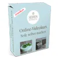

Kreativer online Malkurs "Food Sketching"
Produktprofil · Marktplatz-Daten 2026-10-14 · Verkaufsseiten-Recherche 2026-10-14 · Kategorien: Hobby & Craft
- Kreativer online Malkurs "Food Sketching" ist ein/e Mitgliederbereich & Videokurs in Hobby & Craft, vertrieben über den Digistore24-Marktplatz von Anbieter kolibrischool, gelistet seit 2021-10-29.
- Listenpreis $26.24 (single payment) — Checkout, Auslieferung und Rückerstattungen laufen über Digistore24 selbst, nicht über den Anbieter.
- Käuferschutz: keine standardisierte Garantie-Formulierung gefunden — Rückerstattungsbedingungen vor der Zahlung auf der offiziellen Seite prüfen.
Interesse an Kreativer online Malkurs "Food Sketching"? Aktueller Preis, Boni und Garantiebedingungen finden Sie auf der offiziellen Seite des Anbieters:
Offizielle Verkaufsseite ansehen
Affiliate-Link (Werbung) — wir verdienen ggf. eine Provision, ohne Mehrkosten für Sie.

Marktplatz-Daten
| Produkttyp | Mitgliederbereich & Videokurs |
|---|---|
| Preis | $26.24 (Single payment) |
| Garantie/Rückgabe | Laut Verkaufsseite des Anbieters — vor dem Kauf auf der offiziellen Seite prüfen |
| Anbieter | kolibrischool (gelistet seit 2021-10-29) |
Marktplatz-Beschreibung des Anbieters
Kolibri School ist eine online Malschule für Kinder , in der jedes Kind ab 6 ganz einfach und praktisch online malen lernen kann. In diesem Malkurs lernt man vier leckere Süßspeisen zu skizzieren und anschließend mit Aquarell zu kolorieren: Ein appetitliches Eis im Becher , verlockende französische Macarons , ein frisches Croissant mit Marmelade im Glass und ein Stück verführerische Himbeertorte . Du hast Lust unseren Malkurs zu präsentieren, dann melde dich als Affliate bei uns an. Zum Produkt: 4 Lernvideos je ca 45 Min 4 selbstgemalte Bilder in Aquarell pädagogisch aufbereitete Schritt-für-Schritt-Anleitung geeignet für Kinder und Jugendliche ab 14 Jahren, sowie Erwachsene von Profi-Künstlerin erstellt Deine Vorteile: 20% Provision pro Verkauf Hochwertiges Produkt zum atraktiven Preis zufriedene Kunden sicheres Partnerprogram verwaltet durch Digistore24 perfekte Nische, kaum Wettbewerb Werbemittel nach Anfrage Bei weiteren Fragen stehen wir gerne per E-mail kunst@kolibri-school.de zur Verfügung.
Von der Verkaufsseite des Anbieters
Seitentitel: Food Sketching in Aquarell | Online Malkurse für Kinder ab 6
Meta-Beschreibung: Lernvideos für Kinder 24/7 Online abrufbar. In diesem Malkurs lernen Kinder vier leckere Süßspeisen zu skizzieren und anschließend mit...
Hauptüberschrift
ONLINE VIDEOKURS FÜR KINDER Food Sketching
Abschnitts-Überschriften
- Kursbeschreibung
Einstiegstext
Schon einmal ein köstliches Dessert vor dem Verzehr fotografiert? Wie wäre es das Essen eindrucksvoll und appetitlich zu malen? Wir zeigen, wie es geht.
In diesem Malkurs lernen die Kinder vier leckere Süßspeisen zu skizzieren und anschließend mit Aquarell zu kolorieren. Ein appetitliches Eis im Becher, verlockende französische Macarons, ein frisches Croissant mit Marmelade im Glass und ein Stück verführerische Himbeertorte warten darauf von euch gemalt zu werden.
In den pädagogisch aufbereiteten Lernvideos wird Schritt-für-Schritt erklärt und gezeigt, wie man das Volumen und die Textur der Materialien darstellt. Man setzt sich auseinander mit Licht und Schatten. Dadurch sehen die Skizzen sehr realistisch und lebendig aus.
Sketching ist in der letzten Zeit sehr beliebt geworden. Wichtig ist dabei nicht die technische Perfektion der Zeichnung, sondern ihre Stimmung. Es gibt hier kein Gut oder Schlecht. Die Kinder können der Fantasie freien Lauf lassen und lebendige Illustrationen genießen. Deswegen ist dieser Kurs für alle geeignet: Anfänger und Fortgeschrittene, Kinder und Jugendliche ab 14 Jahren und ihre Eltern.
Recherche-Methode: rohes HTML · 516 Wörter · Qualität: rich · recherchiert am 2026-10-14. Vollständige Recherche-Datei (MD) ↗
Wie Produkte dieser Art geliefert werden
Allgemeiner Hinweis zu diesem Produkttyp (keine anbieterspezifische Anleitung): Videokurse laufen über einen Mitgliederbereich: nach dem Checkout erhalten Sie Zugangsdaten per E-Mail und können die Lektionen in Ihrem eigenen Tempo streamen. Für die genaue Anwendung von Kreativer online Malkurs "Food Sketching" sind die offizielle Verkaufsseite und die enthaltenen Materialien maßgeblich.
Gut zu wissen
- Keine Garantie-Formulierung in unserer Recherche gefunden — bestätigen Sie das Rückgabefenster auf der offiziellen Seite, bevor Sie kaufen.
Was ist Kreativer online Malkurs "Food Sketching"?
Kreativer online Malkurs "Food Sketching" ist ein/e mitgliederbereich & videokurs in der Kategorie Hobby & Handwerk des Digistore24-Marktplatzes, veröffentlicht von Anbieter kolibrischool und im Verkauf seit 2021-10-29. Der Anbieter beschreibt es so: "Kolibri School ist eine online Malschule für Kinder , in der jedes Kind ab 6 ganz einfach und praktisch online malen lernen kann. In diesem Malkurs lernt man vier leckere Süßspeisen zu skizzieren und anschließend mit Aquarell zu kolorieren: Ein appetitliches E" (Marktplatz-Beschreibung des Anbieters, leicht gekürzt).
Kreativer online Malkurs "Food Sketching" Preis: was Sie zahlen
Der Marktplatz listet Kreativer online Malkurs "Food Sketching" zum $26.24 Preis (single payment). Digistore24 fügt im Checkout die gesetzliche Steuer Ihres Landes hinzu — dort sehen Sie den Endbetrag vor der Zahlung. Eine separate Plattformgebühr gibt es nicht; Anbieter können eigene Upsells nach dem Checkout anbieten.
Kreativer online Malkurs "Food Sketching" Rückerstattung und Geld-zurück-Garantie
Wir haben keine standardisierte Garantie-Formulierung auf der Verkaufsseite gefunden. Rückerstattungen für Digistore24-Käufe laufen über die Plattform: Antrag über den Support-Link in Ihrer Bestell-E-Mail, innerhalb des Garantiezeitfensters, das im Checkout angezeigt wird. Praktischer Rat: Entscheiden Sie innerhalb des Fensters — wenn das Produkt unter den Erwartungen bleibt, erstatten lassen statt irren lassen.
Mechanik im Detail: So funktionieren Digistore24-Rückerstattungen.
Für wen ist Kreativer online Malkurs "Food Sketching" geeignet?
Basierend auf der Hobby & Handwerk-Einordnung und der single payment-Abrechnung richtet sich Kreativer online Malkurs "Food Sketching" an Käufer, die hobby & handwerk-Lösungen suchen zum Einstiegspreis. Der ehrliche Test ist nicht die Kategorie, sondern Ihre eigene Situation: Werden Sie es realistisch innerhalb des Garantiefensters nutzen? Wenn ja, ist der Preis eine Investition; wenn nein, ist er Ballast — unabhängig von der Qualität.
Ist Kreativer online Malkurs "Food Sketching" seriös? Was Sie vor dem Kauf prüfen
Wir bewerten keine Seriosität — das kann niemand, ohne das Produkt zu nutzen. Prüfbare Punkte, alle auf dieser Seite: die Marktplatz-Historie des Anbieters (im Verkauf seit 2021-10-29), die wörtlichen Verkaufsseiten-Auszüge unten (gekennzeichnet als Anbieteraussagen — deren Werbung, nicht unsere Empfehlung), die Garantiebedingungen im Checkout und die Auslieferungsart. Vorsichtsignale bei jedem Angebot: Countdown-Dringlichkeit gepaart mit vagen Rückerstattungsbedingungen, Testimonials ohne Datum und Anbieterseiten, die den Preis bis zum Checkout verstecken.
Wie kommen Sie nach dem Kauf an Kreativer online Malkurs "Food Sketching"?
Der Checkout läuft über Digistore24. Nach der Zahlung: Videokurse laufen über einen Mitgliederbereich: nach dem Checkout erhalten Sie Zugangsdaten per E-Mail und können die Lektionen in Ihrem eigenen Tempo streamen. Bewahren Sie die Bestell-E-Mail auf — sie ist Ihr Schlüssel zum/d zur mitgliederbereich & videokurs, zu Rückerstattungsanträgen und zum Digistore24-Käufersupport.
Kreativer online Malkurs "Food Sketching" Erfahrungen: so recherchieren Sie richtig
Die meisten „Erfahrungsberichte" zu Marktplatz-Produkten sind Affiliate-Inhalte — einschließlich Seiten wie dieser, die an Käufen mitverdienen. Behandeln Sie jeden Bericht (auch unseren) als Ausgangspunkt und prüfen Sie gegen Primärquellen: die Verkaufsseite des Anbieters, die Digistore24-Rückerstattungsrichtlinie und — für hobby & handwerk — unabhängige Communities außerhalb des Affiliate-Ökosystems. Auf dieser Seite sind die Verkaufsseiten-Auszüge unten wörtlich zitiert, damit Sie die Aussagen des Anbieters bewerten können, ohne wegzuklicken.
Wie Sie Kreativer online Malkurs "Food Sketching" sicher kaufen
- Öffnen Sie die offizielle Verkaufsseite und lesen Sie das vollständige Angebot.
- Bestätigen Sie Endpreis und Garantiezeitfenster auf der Digistore24-Kassenseite — sie ist bindend, kein Vergleichsportal.
- Zahlen Sie innerhalb des Digistore24-Checkouts (niemals per Überweisung oder Off-Platform-Links).
- Speichern Sie die Bestellbestätigung; notieren Sie die Rückerstattungsfrist im Kalender.
- Prüfen Sie zügig. Der Digistore24-Käufersupport hilft, wenn der Anbieter nicht reagiert.
Vollständiges Recherche-Archiv für dieses Produkt (Markdown: kompletter Marktplatz-Datensatz + wörtliche Verkaufsseiten-Auszüge): Kreativer online Malkurs "Food Sketching" — vollständiges Datenarchiv (Markdown-Datei: 38261-kreativer-online-malkurs-food-sketching.md).
- Listenpreis & Abrechnung — Quelle: offizielle Digistore24-Marktplatz-API, Stand 2026-10-14. Maßgeblich für den aktuellen Preis ist immer die Kassenseite.
- Verkaufsseiten-Zitate — Quelle: https://kolibri-school.de/food-sketching-malen-lernen/, abgerufen 2026-10-14 (Methode: rohes HTML). Verify: offizielle Seite öffnen.
- Garantie / Rückgabe — vom Anbieter festgelegt; vor dem Kauf auf der Verkaufsseite bestätigen.
- Nicht von uns geprüft: Produktqualität, Ergebnisse, Testimonials — kein Praxistest für dieses Listing durchgeführt.
Häufige Fragen zu Kreativer online Malkurs "Food Sketching"
Antworten aus dem Marktplatz-Snapshot (2026-10-14) und der Verkaufsseiten-Recherche (2026-10-14); Anbieteraussagen sind inline gekennzeichnet.
Was ist Kreativer online Malkurs "Food Sketching"?
Kreativer online Malkurs "Food Sketching" ist ein Angebot des Typs „Mitgliederbereich & Videokurs" im Digistore24-Marktplatz, Anbieter: kolibrischool, gelistet seit 2021-10-29. Eingepflegt unter Hobby & Handwerk. Digistore24 wickelt Checkout, Lieferung und Rückgaben ab.
Wie viel kostet Kreativer online Malkurs "Food Sketching"?
Der Digistore24-Marktplatz listet es für $26.24 (single payment). Preise legt der Anbieter fest und können sich ändern — der Marktplatz-Eintrag oben zeigt den Schnappschuss; die offizielle Verkaufsseite zeigt den aktuellen Preis.
Gibt es eine Geld-zurück-Garantie für Kreativer online Malkurs "Food Sketching"?
Unsere Verkaufsseiten-Recherche hat keine explizite Garantie-Formulierung gefunden. Viele Digistore24-Produkte bieten 60 Tage Geld-zurück, aber das legt jeder Anbieter selbst fest — bestätigen Sie es auf der offiziellen Verkaufsseite, bevor Sie kaufen.
Ist Kreativer online Malkurs "Food Sketching" seriös?
Wir bewerten keine Seriosität — wir veröffentlichen überprüfbare Zahlen: Anbieter kolibrischool (gelistet seit 2021-10-29), mit der vollständigen Verkaufsseiten-Recherche archiviert auf dieser Seite (Anbieteraussagen als solche gekennzeichnet). Lesen Sie unsere 6-Punkte-Bewertungsmethode und entscheiden Sie anhand der Zahlen — oder diskutieren Sie Kreativer online Malkurs "Food Sketching" auf GitHub.
Wo kann ich Kreativer online Malkurs "Food Sketching" sicher kaufen?
Nur über die offizielle Verkaufsseite, die auf dieser Seite verlinkt ist (Checkout und Rückgaben laufen über Digistore24). Prüfen Sie dort Preis und Garantie vor der Bestellung. Der Link ist ein Affiliate-Link — der Kauf unterstützt diese Website ohne Mehrkosten für Sie.
Wie erhalte ich Kreativer online Malkurs "Food Sketching" nach der Zahlung?
Der Checkout läuft über Digistore24: Nach der Zahlung erhalten Sie Ihren Zugang oder Download per E-Mail und in Ihrem Digistore24-Kundenkonto. Lieferdetails für diesen Produkttyp: Videokurse laufen über einen Mitgliederbereich: nach dem Checkout erhalten Sie Zugangsdaten per E-Mail und können die Lektionen in Ihrem eigenen Tempo streamen. Bei Problemen kann der Digistore24-Käufersupport Ihre Bestellung wiederherstellen.
Alle 50 Käuferfragen zu Hobby & Handwerk — das komplette Kategorie-FAQ.
Kreativer online Malkurs "Food Sketching" auf Reddit diskutieren
In Community-Threads vergleichen echte Käufer Erfahrungen. Wir verlinken Communities, keine einzelnen Posts — Threads verschwinden, Subreddits bleiben:
- Reddit-Suche nach „Kreativer online Malkurs "Food Sketching"" — Live-Ergebnisse, von uns nicht beeinflusst.
- Top-„Erfahrungs"-Treffer dieses Jahr — selbst nach Aktualität filtern.
Passendes auf Amazon.de
Physische Produkte und Zubehör, die häufig zusammen mit Kreativer online Malkurs "Food Sketching" gekauft werden:
- Hobby & Craft auf Amazon.de — Top-Ergebnisse, Amazon-Ranking.
- Bestseller: Hobby & Craft — live Liste von Amazon, von uns nicht kuratiert.
Werbung: Als Amazon-Partner verdient DigistorePicks DE an qualifizierten Käufen (Partner-tag adminstorede-21). Amazon setzt eigene Preise und Provisionen (niedrige einstellige Prozente — weit unter den 30–75% der Digistore24-Anbieter). Amazon ist ein Convenience-Angebot für Sachprodukte, kein Ersatz für das digitale Produkt oben.
Ähnliche Angebote in Hobby & Handwerk

VoxelPrint Pro ist ein professionelles WordPress- & WooCommerce-Plugin , das deinen Shop in einen vollautomatischen 3D-Druck-Service mit echtem Multicolor-S
Verdien 190 Euro netto pro Sale in der unentdecktesten Nische des Jahres! Bist du genervt von den ewig gleichen Geld-verdienen-Produkten wie Dropshipping, Krypt

Unser Produkt: Online-Zeichenkurs „Vom Anfänger zum Meister“ Ein umfassender, praxisorientierter Online-Zeichenkurs für Anfänger und Fortgeschrittene, die reali

Lass uns auf die Reise gehen und erlebe wie leicht das Klavierspielen sein kann - mit dem Piano.University Intuinauten-Programm . Premium Video-Online-Klavierku
Weitere Angebote von kolibrischool

Kolibri School ist eine online Malschule für Kinder , in der jedes Kind ab 6 ganz einfach und praktisch von zu Hause malen lernen kann. In dem Malkurs "Som

Kolibri School ist eine online Malschule für Kinder , in der jedes Kind ab 6 ganz einfach und praktisch von zu Hause malen lernen kann. In diesem Malkurs lernen

Kolibri School ist eine online Malschule für Kinder , in der jedes Kind ab 6 ganz einfach und praktisch von zu Hause malen lernen kann. Tiere zu malen macht bes
Ähnliche Preislage in Hobby & Handwerk

SecuPerts Rescue Stick – Ihr digitaler Notfallhelfer! Plötzlich startet Ihr Computer nicht mehr? Viren, Malware oder ein Windows-Fehler machen Ihnen das Leben s

Produktbeschreibung für Digistore24-Affiliates Produktdetails • Produktname: Overlock-Grundlagen für Anfänger • Produkttyp: E-Book (PDF) • Preis: 17,99 € (inkl.

Affiliate-Steckbrief • Produkt: Gitarre lernen ohne Frust (E-Book) • Preis: 17,99 EUR • Provision: 70% • Zielgruppe: Anfänger & Wiedereinsteiger, die ohne g

Selbst gemachte Naturseifen sind nicht nur besondere und hochwertige Pflegeprodukte, sondern stellen auch ein perfektes, sinnliches und persönliches Geschenk zu
Ähnliche Suchanfragen
Wo Sie es sich ansehen können
Wo Sie es sich ansehen können
Aktuelle Preise, Garantie und Boni finden Sie auf der offiziellen Verkaufsseite:
Offizielle Verkaufsseite ansehen
Das ist ein Affiliate-Link (Werbung) — kaufen Sie darüber, verdienen wir ggf. eine Provision, ohne Mehrkosten für Sie.
Quellen & weiterführende Informationen
- Offizielle Verkaufsseite (aktueller Preis, Garantie, Boni): kolibri-school.de/food-sketching-malen-lernen/ (Affiliate-Link)
- Öffentliche Digistore24-Produktseite: checkout-ds24.com/product/414062
- Vollständige Recherche-Datei (Markdown, versioniert): content/products/38261-kreativer-online-malkurs-food-sketching.md
- Marktplatz-Kategorie: Hobby & Handwerk
Wie wir Produkte wie Kreativer online Malkurs "Food Sketching" bewerten
Sechs Prüfungen, ausschließlich mit offiziellen Marktplatz-Zahlen. Die vollständige Bewertungsmethode lesen · unsere Recherche-Standards & Kennzeichnung.
Fragen oder eigene Erfahrungen mit Kreativer online Malkurs "Food Sketching"?
Praxis-Tests veröffentlichen wir erst, nachdem wir ein Produkt selbst gekauft haben — aber Ihre Erfahrung hilft anderen Lesern: Diskussion zu Kreativer online Malkurs "Food Sketching" auf GitHub starten/verfolgen. Falsche Zahl gefunden? Korrektur melden — jede Seite zeigt ihre Datenstände, Korrekturen gelten für die ganze Website.